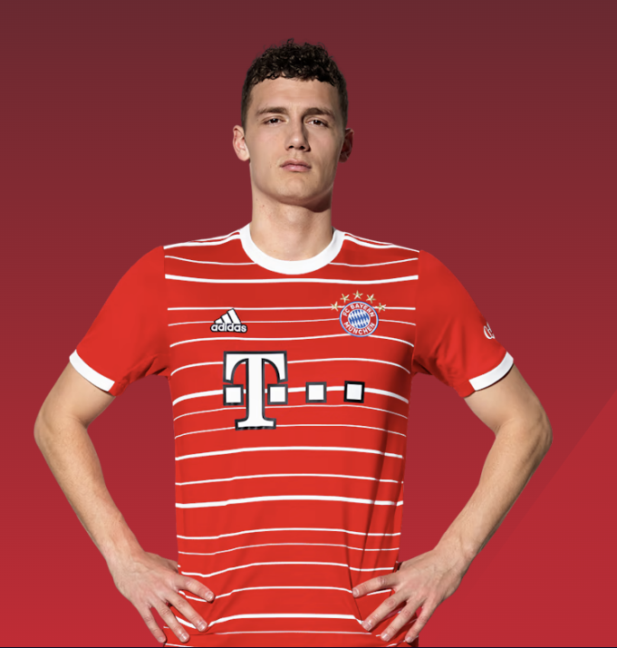
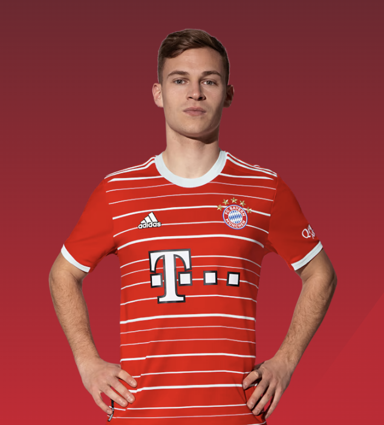
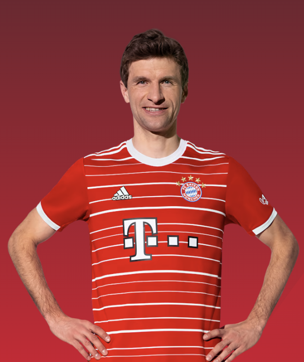

- Team introducing
- players
- recording
my favorite players
GOALKEEPERS
Manuel Neuer


from "https://fcbayern.com/en/teams/first-team"
Height:1.93m
Weight:93kg
Date of birth:27/03/1986
Nationality:German
Back number:1
Manuel Neuer has been the FCB keeper since 2011. The Gelsenkirchen native started out at his hometown club
Schalke 04.
In 2011 and 2014, he was named German Player of the Year, as well as being voted the Best FIFA Goalkeeper in
2020.
Among other things, he's won the treble twice (2013 and 2020) with the men from Munich, and since 2017 he's worn
the captain's armband at the record champions.
In 2014, Manuel Neuer won the World Cup in Brazil with the German national team.
honours
FIFA World Cup winner (2014), third place (2010)
UEFA Champions League 2013, 2020
Bundesliga 2013, 2014, 2015, 2016, 2017, 2018, 2019, 2020, 2021
DFB Cup 2011, 2013, 2014, 2016, 2019, 2020
FIFA Club World Cup 2013, 2020
UEFA Super Cup2013, 2020
DFL Supercup 2012, 2016, 2017, 2018, 2020, 2021
UEFA European Under-21 Championship2009
The Best FIFA Goalkeeper 2020
World's Best Goalkeeper (IFFHS)2013, 2014, 2015, 2016, 2020
German Player of the Year2011, 2014
FIFA World Cup Golden Glove2014
DEFENDERS
BENJAMIN PAVARD

 Height:1.86m
Weight:81kg
Date of birth:28/03/1996
Nationality:French
Back number:5
Height:1.86m
Weight:81kg
Date of birth:28/03/1996
Nationality:French
Back number:5
Benjamin Pavard grew up in France and began his professional career at OSC Lille.
He later moved to Germany to join VfB Stuttgart.
He's been part of the FC Bayern defence since the 2019/2020 season and can play both on the right and as a
central defender.
Pavard won the treble in 2020 with the men from Munich, and in 2018 he became a World Cup winner with the French
national team.
honours
FIFA World Cup2018
FIFA World Cup Goal of the Tournament2018
UEFA Nations League2021
Bundesliga2020, 2021
DFB Cup2020
UEFA Champions League2020
UEFA Super Cup2020
FIFA Club World Cup 2020
DFL Supercup 2020, 2021
Bundesliga 22017
MIDFIELD
JOSHUA KIMMICH

 Height:1.77m
Weight:75kg
Date of birth:08/02/1995
Nationality:German
Back number:6
Height:1.77m
Weight:75kg
Date of birth:08/02/1995
Nationality:German
Back number:6
Joshua Kimmich plays as a defensive midfielder for FC Bayern.
At the age of 12 he left his hometown club VfB Bösingen to join the VfB Stuttgart academy.
After six years he left for Leipzig, before moving to Munich in 2015.
He's won the double multiple times with Bayern as well as the treble in 2020.
Bundesliga 2016, 2017, 2018, 2019, 2020, 2021, 2022
DFB Cup2016, 2019, 2020
UEFA Champions League2020
UEFA Super Cup2020
FIFA Club World Cup 2020
DFL Supercup2016, 2017, 2018, 2020, 2021
FIFA Confederations Cup2017
UEFA European Under-19 Championship2014
Promotion to Bundesliga 2(2014)
Fritz Walter Medal silver (2013), bronze (2014)
FORWARD
THOMAS MÜLLER

 Height:1.85m
Weight:76kg
Date of birth:13/09/1989
Nationality:German
Back number:25
Height:1.85m
Weight:76kg
Date of birth:13/09/1989
Nationality:German
Back number:25
Thomas Müller joined the FC Bayern youth set-up from TSV Pähl in 2000, and has worn the jersey of the German
record champions since making his senior debut in the summer of 2008, making him the longest-serving player in
the squad. In both 2013 and 2020, the club icon won the treble of Champions League,
Bundesliga and DFB Cup with Bayern, and following his 11th league title in the summer of 2022, he's the most
successful Bundesliga player in history.
FIFA World Cup winner (2014), third place (2010)
FIFA Club World Cup2013, 2020
UEFA Champions League2013, 2020
UEFA Super Cup2013, 2020
Bundesliga 2010, 2013, 2014, 2015, 2016, 2017, 2018, 2019, 2020, 2021
DFB Cup2010, 2013, 2014, 2016, 2019, 2020
DFL Supercup2010, 2012, 2016, 2017, 2018, 2020, 2021
FIFA World Cup Golden Boot2010
FIFA World Cup Silver Boot 2014
FIFA World Cup Best Young Player2010